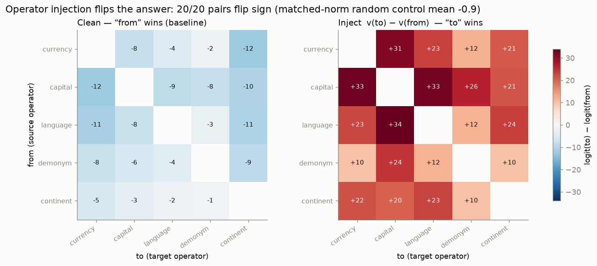
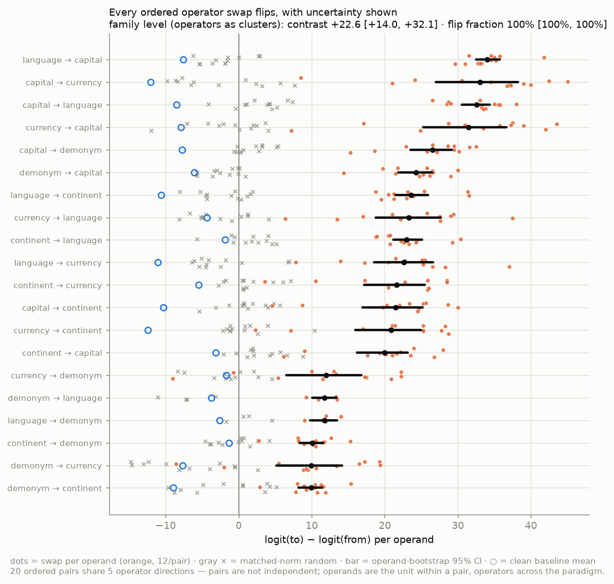
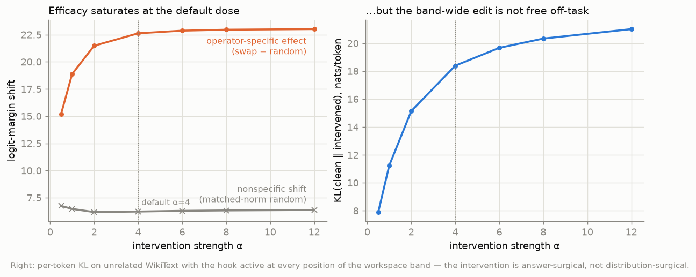
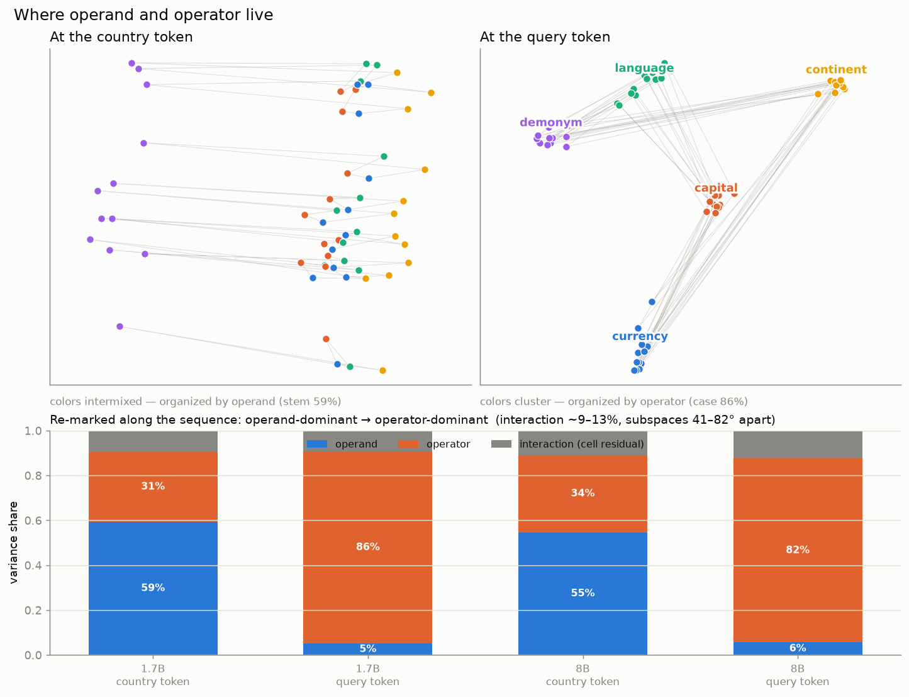
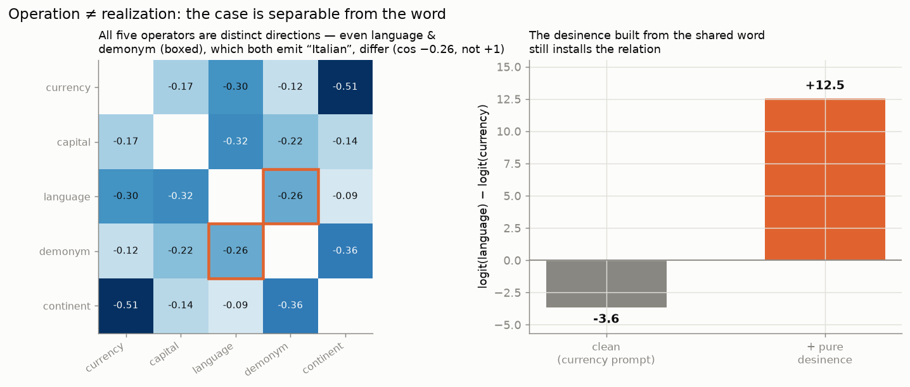

Causal operator–operand factorization in the residual stream of LLMs
Subtitle: relational computation as declension — the model marks concepts by their functional role. The case metaphor is our explanatory device; the claims below stand on the causal interventions and the measured factorization.
Download the PDF Interactive explorer
Draft, 2026-07-10. Qwen3-1.7B/8B + Gemma-2-9B. All numbers reproducible from scripts/ and data/; see
"How to reproduce" and the working findings log. An
interactive explorer animates the three central results (declension, injection,
syncretism) and, for readers new to grammatical case, explains the linguistic analogy.
Abstract
How do language models represent a relational operation — currency-of, capital-of — as distinct
from the entity it applies to? Across Qwen3-1.7B/8B and Gemma-2-9B, we find the operation is carried by
a manipulable operator direction in the residual stream, largely separable from the operand: a
two-way analysis of variance factorizes the mid-network state as H ≈ μ + operand + operator +
interaction, ~90% additive, with the operator component dominant at the query position. The direction
is causal: adding v(op_B) − v(op_A) flips the target-vs-source logit margin for all 20 ordered
relation pairs in all three models (a single mid-workspace layer suffices), while matched-norm random
controls do nothing — and a query-position activation patch reroutes the greedy answer itself at the
model's competence ceiling. It generalizes:
directions built on half the operands flip the held-out half; directions built in one wording of a
relation transfer to re-framed and fully re-lexicalized prompts; and the operation is separable from its surface realization —
language-of and demonym-of are distinct directions even though both emit "Italian". The
factorization is specific to relational retrieval: under the identical pipeline, arithmetic and
comparison-logic operators show 2–4× the interaction and fail held-out generalization. Relational
computation in these models is, to a first approximation, an operand plus a transplantable operator.
1. Introduction
A line of work shows that a task or relation can be captured by a single addable vector in an LLM's residual stream (task vectors, Hendel et al. 2023; function vectors, Todd et al. 2024) and that many relations are approximately linear operators (LRE, Hernandez et al. 2024; Merullo et al. 2024). What has not been characterized is the joint structure of operator and operand: whether the operation factorizes from its argument, whether that factorization generalizes, whether the operation is separable from the word it produces, and whether any of this holds beyond relational facts, in arithmetic and logic. We answer these on Qwen3 and Gemma-2. A closing discussion (§5) offers a morphological reading — relational computation as declension — as an organizing metaphor for the asymmetries we observe.
2. Related work and what is new here
Extracting relational concepts. The closest prior work is Wang et al. (2024), who locate hidden states that express a relation separately from its subject, transplant these relational representations between subjects, and rewrite relations across 22 relation types and several models. We instead characterize the joint geometry of relation and entity: we quantify its additive and interaction components (the two-way ANOVA with a measured fusion term), run exhaustive all-pairs swaps against matched-norm nulls, and test whether relation directions generalize causally across held-out entities, prompt contexts, architectures, and task domains — including the domains where the factorization fails.
Operation as an addable vector. Task Vectors (Hendel et al., EMNLP 2023) and Function Vectors (Todd et al., ICLR 2024) extract one vector per ICL task and add/patch it to trigger the task. In-Context Vectors (Liu et al., ICML 2024) and ActAdd (Turner et al. 2023) steer a task/style similarly. These bundle operator and operand into one unfactored "task" direction and (for FVs) show partial cross-task arithmetic without null controls. We contribute the factorization (operator ⊕ operand), an exhaustive all-pairs swap with matched-norm nulls, and a held-out-operand generalization test.
Relation as a linear operator. LRE (Hernandez et al., ICLR 2024) fits a full affine map W·s + b per
relation. That represents the relation as a monolithic operator; we show an additive
operator direction that is arithmetically composable and factorable from the operand, and we
quantify the operand/operator/interaction variance split, which LRE does not.
Additive factual recall. Summing Up the Facts (Chughtai et al. 2024) decomposes factual recall into additive circuits (subject vs relation contributions). Ours is a representational two-way ANOVA of the residual state with an explicit, measured interaction/fusion term — a different object.
Attribute subspaces / reading position. RAVEL (Huang et al., ACL 2024) disentangles multiple attributes of one entity into subspaces (operators sharing an operand); we measure the orthogonal axis, operator vs operand. The operand→operator shift along the sequence restates the subject-enrichment → attribute-extraction dynamics of Geva et al. (EMNLP 2023) in operator/operand terms — our least novel point, included as confirmation.
Global workspace and the Jacobian lens. Gurnee, Sofroniew, Lindsey et al. (2026) introduce the Jacobian lens and identify a mid-depth "global workspace" band of the residual stream. We adopt their depth band as the site of intervention and their lens as scaffolding; our contribution is orthogonal — the operator/operand structure of what that band holds — and we additionally report a controlled null on the lens's readout advantage for our task (§4.8).
Arithmetic and logic. Arithmetic in LLMs is reported as a "bag of heuristics" (Nikankin et al. 2025) and Fourier/helical procedures (Nanda et al. 2023; Zhong et al. 2023; Kantamneni & Tegmark 2025), with the operand value cleanly linear (Gurnee & Tegmark 2024). Truth is a steerable direction (Marks & Tegmark 2023) and logical-operator heads exist (Hong et al. 2024). No prior work reports a cross-domain operator/operand factorization; we provide one and show it breaks down for arithmetic and logic — itself a result.
What is new here is the combination, not any single ingredient. That relations admit addable vectors (task/function vectors) and linear decoders (LRE) is established; what has not been done is the joint, quantified analysis: (1) an operator ⊕ operand factorization of the residual state itself (two-way ANOVA with a measured interaction/fusion term and operator/operand subspace angles); (2) an exhaustive all-pairs causal swap with matched-norm nulls; (3) held-out-operand generalization as the test separating a transferable direction from interpolation among build examples; (4) the operation-vs-realization dissociation (language ≠ demonym as directions despite identical output); and (5) a cross-domain test showing the factorization is specific to relational retrieval and breaks down for arithmetic and logic. The declension/case reading is our presentation of these measurements — an organizing metaphor that anticipates the observed asymmetries (syncretism at the exponent, fusion in the interaction term) — not an additional empirical claim.
3. Method
Setup. Qwen3-1.7B/8B throughout, plus Gemma-2-9B for the cross-architecture replication (§4.5); all
run in bf16 on a single AMD Strix Halo APU (environment details in the supplementary repository). A relation is rendered into a template; the canonical frame is
"The {op} of {a} is", and §4.4 additionally uses two paraphrase frames (question–answer and
discourse-prefixed) that hold the {op} of {a} unit fixed while varying the surrounding frame, all
ending in is so answer scoring is comparable.
Reading position is the query token unless stated; the depth "workspace" band (38–92% of layers) is where
the J-space paper locates the global workspace and where we build operator directions.
Operator direction. For operator k, v(k) = mean_operand[ h(operand, k) − mean_op h(operand, ·) ]
at the workspace layers — the deviation of an operator from the operand's average over operators, averaged
over operands (the function-vector construction; implementation details in Appendix A).
Swap and controls. Efficacy of k_A → k_B is the change in logit(answer_B) − logit(answer_A) at the
query position when α·(v(k_B) − v(k_A)) is added over the band, versus a matched-norm random
direction. Answers are scored by their distinguishing token (bare digit for arithmetic, since Qwen3
splits " 3" into [space, 3]); a tokenization guard drops, within each operator pair, the operands whose
two answers collide at that token (for relations this leaves 4 of 12 operands on the syncretic
demonym↔language pairs and all 12 elsewhere).
Factorization. H[operand, operator] = μ + operand(o) + operator(k) + interaction; we report the
variance share of each term and the principal angles between the operand- and operator-subspaces
(Appendix A).
Generalization. Build v(op) from half the operands; test the swap on the held-out half. This
distinguishes a genuine operator from interpolation among the examples used to build it.
Statistical treatment. The 20 ordered swaps are not 20 independent observations: they are built from 5 operator directions (each participating in 8 ordered pairs) and evaluated on the same shared operand set (12 operands, 4 on the syncretic pairs after the tokenization guard). We therefore report cluster-bootstrap percentile intervals (10,000 replicates) at two levels. Within a pair, the operand is the resampling unit (per-pair 95% CIs). Across the paradigm, the operator is the top-level cluster: a dyadic node bootstrap resamples the operator set with replacement, weights each ordered pair by the product of its endpoints' multiplicities, and resamples operands within surviving pairs (per-operand values are released as long-form artifacts; Appendix A).
J-space controls. We repeat readout-geometry in the J-lens readout unembed(J·h) vs the logit-lens
readout unembed(h), and re-run efficacy with spectrum-matched random-projection and
permuted-vocabulary null lenses (Appendix B).
4. Results
4.1 Relational operators are manipulable directions
All 20 ordered operator swaps flip the target-vs-source logit margin (the sign of
logit(answer_B) − logit(answer_A) at the distinguishing token; mean swap +21 logit units on 1.7B,
+25 on 8B) while
the matched-norm random control is ~0. Representative (1.7B):
| swap | clean | +operator | +random |
|---|---|---|---|
| currency → capital | −7.9 | +31.5 | −1.2 |
| capital → currency | −12.0 | +33.0 | −2.5 |
| capital → language | −8.5 | +32.5 | +3.0 |
| continent → language | −1.9 | +23.0 | +1.4 |

Injecting the operator difference v(to) − v(from) flips every one of the 20 ordered pairs: clean (left,
"from" wins, blue) → swapped (right, "to" wins, red). The matched-norm random control moves nothing.
Under the operator-level cluster bootstrap (§3, the level that respects that pairs share directions), the swap−random contrast is +22.6, 95% CI [+14.0, +32.1] at 1.7B and +26.0 [+17.9, +32.8] at 8B; the flip fraction is 1.00 [1.00, 1.00] at both scales — every replicate flips every pair. Per-pair operand-bootstrap CIs never cross zero:

Every ordered swap, with uncertainty. Orange dots = per-operand swap values (median 12/pair; the
tokenization guard leaves 4 for the syncretic demonym↔language pairs); gray × = matched-norm random
control; black bar = operand-bootstrap 95% CI; blue ○ = clean baseline mean. The weakest effects are
precisely the syncretic pairs (demonym ↔ language and swaps into demonym) — where the two operations
share their surface form.
Dose–response and collateral cost. Sweeping the intervention strength α (1.7B) separates the effect into its parts: the operator-specific component (swap − random) rises and saturates at ≈+23 by the default α = 4, while the matched-norm random control contributes a nonspecific margin shift of ≈+6 that is flat in α — any large perturbation degrades the clean answer's dominance somewhat, which is why all headline numbers are swap − random contrasts. The intervention is answer-surgical, not distribution-surgical: with the same hook active on unrelated WikiText, per-token KL(clean ‖ intervened) grows from 7.9 nats (α = 0.5) to 21 nats (α = 12) — 18.4 at the default — so the band-wide edit substantially distorts off-task text. We report this as an honest cost of the band-wide, all-position intervention rather than tuning it away; targeted (single-position) variants are the natural mitigation and are left to future work.
Minimal intervention, and margins vs. generation. The band-wide injection is not the minimal effective intervention: restricting the same directions to a single mid-workspace layer still flips 20/20 margins (contrast +6.8 [+3.0, +8.9]) at 4.5× lower off-task cost (KL 4.6 vs. 20.6 nats/token); the middle half-band gives +12.8 [+7.9, +16.3] at 10.9 nats. Greedy decoding sharpens the picture: the additive injection — at any width — flips the relative margin but does not make the model emit the target answer within three greedy tokens (0% exact match; consistent with its off-task distortion), whereas replacing the query-position residual with a real donor activation (same operand, target relation — classic activation patching: one position, no averaged direction) makes the model say the target answer at 51%, essentially its own clean-prompt accuracy of 53%. The averaged difference direction manipulates preference; the state-level patch reroutes the generated answer at the model's competence ceiling.

4.2 The representation factorizes into operator ⊕ operand
Two-way ANOVA at a mid-workspace layer (1.7B / 8B):
| read position | operand | operator | interaction (fusion) |
|---|---|---|---|
| query token | 5% / 6% | 86% / 82% | 9% / 13% |
| entity token | 59% / 55% | 31% / 34% | 9% / 11% |
~90% additive; operand and operator components occupy distinct subspaces (principal angles 41–85° at the query token, all three models — though near-orthogonality is the high-dimensional default, so the load- bearing evidence is the variance decomposition and the causal swaps, not the angles). The operation- dominant representation emerges along the sequence: the entity enters operand-dominant and is declined into an operator-marked form by the query position (the reading-position control rules out template echo; the causal swaps are the stronger control).

Where operand and operator live. Colored by operator throughout: at the country token the colors intermix (the cloud is organized by operand); at the query token the same points separate into five case clusters. Each country's five case-forms (faint web) start together and are pulled apart — the concept is declined along the sequence.
4.3 Operation ≠ realization (syncretism)
language-of and demonym-of emit the same word (Italian) yet are distinct operator directions;
the swap between them is weak precisely because they share an exponent. A pure desinence built from
the shared-output pairs (mean[h(language) − h(demonym)], exponent cancelled) still installs the relation
causally (1.7B: −3.6 → +12.5). The syncretism appears at the exponent level, not the case level — as
in Latin declension.

Operation ≠ realization. Every operator is a distinct direction — including language and demonym (boxed), which emit the identical word "Italian". A desinence built precisely where the two share their output word (so the word cancels) still installs the relation: the case is separable from the word that realizes it.
4.4 Operators generalize to held-out operands and across prompt frames
Held-out operands. v(op) built on 6 operands and applied to the 6 held-out operands still flips
20/20 swaps — a genuine, transferable operator, not interpolation. Operator-level cluster bootstrap
on the held-out contrast: +20.0 [+10.8, +29.5] at 1.7B, +22.8 [+14.0, +31.0] at 8B; flip
fraction 1.00 [1.00, 1.00] at both.
Cross-frame transfer. To rule out template echo we render every relation in
three paraphrase frames — declarative (The {op} of {a} is), question–answer (Q: What is the {op} of
{a}? A: It is), and discourse-prefixed (It is well known that the {op} of {a} is) — and test every
build→test frame combination: v(op) built on frame i, all-pairs swap run on frame j. On 1.7B, all
9 combinations flip 20/20 (180/180; off-diagonal transfer 120/120, mean contrast +24.2), and the
contrast is frame-invariant to two decimals: directions built on the declarative frame produce +22.6 on
all three test frames. The clean baselines do shift across frames (−7.0 / −8.1 / −7.9), confirming the
frames are genuinely different prompts; the operator's causal effect does not. At 8B the pattern
replicates — 100/100 flips over the tested combinations (80/80 cross-frame, mean contrast +28.7),
with the declarative-built direction again frame-invariant (+26.0 / +26.0 / +26.0). The operator
direction is invariant to the prompt context around the fixed {op} of {a} unit.
Cross-lexicalization transfer. The stronger question is whether the direction survives changing the wording of the relation itself. We re-lexicalize every relation — currency of {a} → money used in {a}, capital of {a} → seat of government in {a}, language of {a} → language primarily spoken in {a}, demonym → name for someone from {a}, continent of {a} → world region containing {a} — and test both transfer directions. Directions built on the of-phrasings flip the re-lexicalized prompts, and vice versa: 40/40 at 1.7B (mean contrast +21.7) and 40/40 at 8B (+26.8), with transfer contrasts indistinguishable from within-formulation ones (1.7B: +22.59 transferred vs. +22.62 within; operator-level 95% CIs overlap almost exactly). The clean baselines differ across formulations — the prompts are genuinely different — but the operator's causal effect does not. The direction is a property of the relation, not of its wording.
4.5 Cross-architecture replication (Gemma-2-9B)
The entire pipeline transfers unchanged to Gemma-2-9B — a different pretraining corpus, tokenizer (SentencePiece; answer single-token coverage 0.95), and architecture family (soft-capped logits, GQA):
| measure | Qwen3-1.7B | Qwen3-8B | Gemma-2-9B |
|---|---|---|---|
| all-pairs swap contrast | +22.6 [+14.0, +32.1] | +26.0 [+17.9, +32.8] | +30.4 [+23.8, +34.8] |
| flips (swap > 0) | 20/20 | 20/20 | 20/20 |
| held-out-operand contrast | +20.0 [+10.8, +29.5] | +22.8 [+14.0, +31.0] | +26.6 [+20.6, +33.2] |
| operator variance @ query | 86% | 82% | 84.8% |
| interaction (fusion) | 9% | 13% | 6.8% |
| pure desinence (clean → +v) | −3.6 → +12.5 | −2.9 → +8.1 | −3.0 → +8.5 |
Every qualitative signature replicates — all-pairs flips with matched-norm nulls ≈ 0, held-out-operand transfer, case-dominant factorization at the query token with single-digit fusion, the along-sequence shift (stem 37.6% → 8.4% from the entity token to the query token), and the exponent-free desinence. Raw logit units are not directly comparable across architectures (Gemma-2 soft-caps its final logits), so cross-model comparison should lean on the flip rates and variance shares, which match or exceed Qwen3's. The operator–operand factorization is not an idiosyncrasy of one model family.
4.6 The factorization is domain-specific (arithmetic and logic do not, under our setup)
Extending the identical pipeline to arithmetic (+, ×, −) and comparison-logic operators, on 1.7B:
| domain | operator variance | interaction (fusion) | held-out generalization | swap vs random |
|---|---|---|---|---|
| relational | 86% | 9% | 20/20 flip | +21 vs ~0 |
| arithmetic | 55% | 23% | 2/6 (≤ random) | +0.4 vs +0.3 |
| logic (compare) | 33% | 34% | 2/6 (≤ random) | +1.2 vs +0.2 |
The gradient replicates and sharpens at 8B: relational held-out generalization 20/20 (interaction 13%); arithmetic interaction 25%, held-out 1/6; logic interaction 45%, held-out 0/6 (swap below random). Monotone at both scales: relational ≫ arithmetic > logic.
Relational operators factorize cleanly and generalize; arithmetic and logical operators are entangled with their operands (2–4× the interaction) and do not form a transferable direction — consistent with arithmetic being a bag of heuristics / Fourier computation rather than a linear operator. The held-out generalization test is what separates a transferable operator direction from memorized interpolation.
4.7 Reconciling with a contrary report: add-N vs. two-operand arithmetic
Christ et al. (2025) report the opposite sign for arithmetic: an operator built from an add-N
relation (a fixed addend N applied to a single number) does generalize to held-out relations. The
two results do not conflict — they cut arithmetic along different axes. In add-N the operator is the
addend N over one numeric operand, so "generalizing across N" is interpolation along the number
line (the operand value is itself linear; Gurnee & Tegmark 2024), not transfer of a function. Our
+ × − cut varies the function over two operands. Running both cuts on Qwen3
(op_core.py --domain arith_addN vs arithmetic; scripts/operator_collinearity.py) places add-N
exactly between relations and the genuine-function cut:
| cut | held-out generalization (1.7B / 8B) | operator-set collinearity (top-1 var) |
|---|---|---|
| relations (5 operations) | 20/20 · 20/20 | 0.39 (spread paradigm) |
| add-N (operator = addend) | 5/12 · 6/12 (+0.10 / +0.05) | 0.76 (most 1-D / number-line) |
+ × − (operator = function) |
2/6 · 1/6 (−0.43 / −0.55) | 0.64 |
add-N generalizes better than + × − (positive vs. clearly negative) and its operator directions are
the most collinear of the three families — 76% of the operator-set variance on a single line —
consistent with add-N being a linear numeric family rather than a set of distinct operations. This
reproduces Christ et al.'s positive (their cut varies a linear parameter) alongside our negative (ours
varies the function) with no contradiction. The caveat is quantitative: Qwen3 BPE restricts us to
single-digit results, so the add-N grid is small (5 operands) and its generalization is weak in absolute
terms — the ordering (relations ≫ add-N > + × −), not the magnitude, is the claim.
4.8 This is causal structure, not a J-space readout advantage
This project began as a replication of the J-space readout claim of Gurnee, Sofroniew, Lindsey et al. 2026, whose "workspace" band we intervene on throughout. Under matched controls — including a spectrum-matched random projection — the Jacobian-lens readout showed no advantage over the logit lens on any of four comparisons (Appendix B). The structure reported here is causal organization of the residual stream, not a privileged readable subspace.
5. Discussion: relational computation as declension
The measurements invite a morphological reading, offered as an organizing metaphor rather than an additional claim. In a declining language a noun's role is marked by a case ending on a stem — and each structural feature of a case system has a measured counterpart here. The same stem takes different endings (one country, five operator directions); the same ending applies across stems (held-out-operand transfer, §4.4); two cases can share a surface form without being the same case (syncretism: language-of and demonym-of both emit "Italian", yet are distinct directions and their mutual swap is the weakest of the paradigm, §4.3); and stem and ending do not compose perfectly (fusion: the ~10% interaction term, §4.2). The exponent-free desinence is the metaphor's sharpest prediction — a case marker stripped of its surface form should still be causally functional, and it is (§4.3). The metaphor also marks its own limits: arithmetic and logic operators do not decline (§4.6); whatever those domains use, it is not a case system.
6. Limitations
- Scale and family. 1.7–9B models from two families (Qwen3, Gemma 2) — both decoder-only transformers; no ≥30B model. Relational linearity holds for a subset of relations even in-domain (cf. LRE ~48%).
- Relation coverage. Five hand-chosen country relations, English-only. Prompt variation covers three context frames and a full re-lexicalization of every relation (§4.4); more relations, other entity types, and other languages remain open.
- Arithmetic coverage. Qwen3 BPE splits multi-digit numbers, so we restrict to single-digit results; the arithmetic null is on that regime and at 1.7B/8B, where arithmetic competence is itself limited.
- Reading-position result restates known subject-enrichment→attribute-extraction dynamics.
- No J-space claim. The readout-geometry difference is 1.7B-specific; the paper stands on the causal factorization, not on a J-lens readout advantage.
7. Conclusion
An LLM represents a relational operation as a causally manipulable operator direction that factorizes from the operand, generalizes to unseen operands, and separates the operation from the word that realizes it — a structure well described as declension. This factorization is not universal: it is clean for relational retrieval and breaks down for arithmetic and logic, whose operators are entangled with their operands. The structure is causal; it is not a more-readable subspace.
Appendix A: Reproducibility, stimuli, and implementation details
Checkpoints and hardware. Qwen/Qwen3-1.7B, Qwen/Qwen3-8B, google/gemma-2-9b, all bf16 on a
single AMD Strix Halo APU (128 GB unified memory, ROCm PyTorch). Seeds default to 0 and affect only the
random controls; direction building is deterministic.
Stimuli. Operands (12 countries): Italy, Japan, Russia, China, France, Germany, Brazil, Egypt,
India, Mexico, Sweden, Turkey. Relations: currency, capital, language, demonym ("word for a person
from"), continent; every (country, relation) cell has a gold one-word answer (e.g. Italy → euro, Rome,
Italian, Italian, Europe); the full grid ships in data/relations.json, the lexical reformulations in
data/relations_lex.json, and the paraphrase frames in the dataset metadata.
Answer scoring and selection. Answers are scored at the first token of " " + answer. Within each
ordered operator pair, operands whose two answers collide at that token are dropped (4 of 12 survive on
the syncretic demonym↔language pairs; all 12 elsewhere). Whole-word single-token coverage: 0.92 (Qwen3
BPE), 0.95 (Gemma SentencePiece).
Directions, interventions, and controls. v(op)[layer] is the mean over (operand, frame) cells of
the op's residual minus that cell's mean over ops, computed at ~25 evenly spaced source layers restricted
to the 38–92% depth band. Interventions add α · (v(to) − v(from)) at every position of the band
(α = 4 unless swept). The matched-norm control draws one Gaussian vector per layer and rescales the
band-concatenated stack to exactly the injected difference's norm. Clean mean margins
logit(to) − logit(from) are ≈ −7 to −8 across models and frames; per-operand values for every
experiment are released as long-form artifacts (results/ablation/*_long.parquet).
Experiment drivers. op_core.py (directions, swaps, ANOVA, cluster bootstraps),
operator_paradigm.py, operator_factorize.py, operator_templates.py, operator_lexical.py,
op_dose.py, op_minimal.py, op_geometry_dump.py.
Appendix B: The J-space readout comparisons
Four readout comparisons on Qwen3-1.7B (8B where noted) asked whether the Jacobian-lens readout exposes more than the logit lens: bridge-entity pass@k (a tie, drifting toward the logit lens at 8B); a surface-form logit difference with real competitors (logit lens matches or wins in every depth band); a grammatical-number probe with Hewitt–Liang selectivity (number decodable at ceiling from all lenses — including a spectrum-matched random projection, the decisive control); and the concept-plane trajectory that motivated the project (the J-lens path is longer on random planes too — a generic magnitude effect, not a concept channel). A permuted-vocabulary lens control behaves accordingly. The 1.7B readout-geometry difference (cases reorganizing by output form in J-space) does not replicate at 8B and is not relied on. Full tables live in the project's working log.
References
Christ et al. 2025, The Structure of Relation Decoding Linear Operators in Large Language Models, NeurIPS (Spotlight), arXiv:2510.26543 · Chughtai et al. 2024, Summing Up the Facts, arXiv:2402.07321 · Geva et al. 2023, Dissecting Recall of Factual Associations, EMNLP · Gurnee, Sofroniew, Lindsey et al. 2026, Verbalizable Representations Form a Global Workspace in Language Models, Transformer Circuits Thread · Gurnee & Tegmark 2024, Language Models Represent Space and Time, ICLR · Hendel et al. 2023, In-Context Learning Creates Task Vectors, EMNLP Findings, arXiv:2310.15916 · Hernandez et al. 2024, Linearity of Relation Decoding in Transformer LMs (LRE), ICLR, arXiv:2308.09124 · Hong et al. 2024, A Implies B: Circuit Analysis for Propositional Logic, arXiv:2411.04105 · Huang et al. 2024, RAVEL, ACL, arXiv:2402.17700 · Kantamneni & Tegmark 2025, Language Models Use Trigonometry to Do Addition, arXiv:2502.00873 · Liu et al. 2024, In-Context Vectors, ICML, arXiv:2311.06668 · Marks & Tegmark 2023, The Geometry of Truth, arXiv:2310.06824 · Merullo et al. 2024, Language Models Implement Simple Word2Vec-style Vector Arithmetic, NAACL, arXiv:2305.16130 · Nanda et al. 2023, Progress Measures for Grokking, ICLR, arXiv:2301.05217 · Nikankin et al. 2025, Arithmetic Without Algorithms, ICLR, arXiv:2410.21272 · Todd et al. 2024, Function Vectors in Large Language Models, ICLR, arXiv:2310.15213 · Turner et al. 2023, Activation Addition (ActAdd), arXiv:2308.10248 · Wang, Whyte & Xu 2024, Locating and Extracting Relational Concepts in Large Language Models, ACL Findings, arXiv:2406.13184 · Zhong et al. 2023, The Clock and the Pizza, NeurIPS, arXiv:2306.17844.